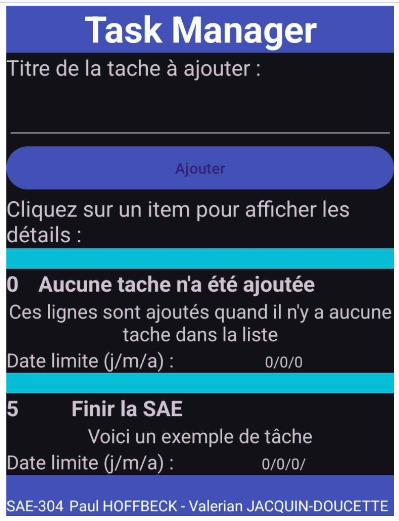

School projects
These projects were carried out as part of my university studies in order to validate the acquisition of technical and cross-disciplinary skills. They combine practical implementation, report writing, and oral defense.
These projects were carried out as part of my university studies in order to validate the acquisition of technical and cross-disciplinary skills. They combine practical implementation, report writing, and oral defense.
The Development and Cloud specialization I chose in my second year allowed me to carry out projects focused on virtualization and containerization.
Design and deployment of a local area network comprising a firewall, a DNS/AD server, a web server, and several client workstations.

Development of an application based on containerized microservices (Docker) to manage and visualize project SBOMs.

Creation of a showcase website and intranet in PHP/HTML/CSS with user management and integrated security.

Android application in Java with calendar and tracking functions, developed with a focus on ergonomics and software design.
Design of a multi-site network integrating VPN tunnels, IPv6 routing, and comprehensive technical documentation.

Deployment of a complete corporate network with DNS/AD, firewall, and virtualized web server.

These projects were carried out in companies as part of my second-year internship and my work-study program. They reflect my technical skills applied in a real professional context.
Modernization of an industrial site's network: replacement of switches, rewiring, and updating of technical documentation.

Configuring an SD-WAN solution to improve network resilience and flexibility.

As a customer solutions engineer, I am involved in the design, deployment, and support of network, cloud, and security infrastructures. I will therefore be in contact with customers of different nationalities.
{kind=link}